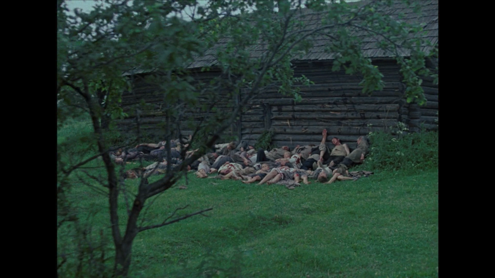

Иди и смотри
And I saw when the Lamb opened one of the seals, and I heard, as it were the noise of thunder, one of the four beasts saying, Come and see.
And I saw, and behold a white horse: and he that sat on him had a bow; and a crown was given unto him: and he went forth conquering, and to conquer.
All these are the beginning of sorrows.
And when he had opened the second seal, I heard the second beast say, Come and see.
And there went out another horse that was red: and power was given to him that sat thereon to take peace from the earth, and that they should kill one another: and there was given unto him a great sword.
For nation shall rise against nation, and kingdom against kingdom.
And when he had opened the third seal, I heard the third beast say, Come and see. And I beheld, and lo a black horse; and he that sat on him had a pair of balances in his hand.
And I heard a voice in the midst of the four beasts say, A measure of wheat for a penny, and three measures of barley for a penny; and see thou hurt not the oil and the wine.
And there shall be famines.
And when he had opened the fourth seal, I heard the voice of the fourth beast say, Come and see.
And I looked, and behold a pale horse: and his name that sat on him was Death, and Hell followed with him. And power was given unto them over the fourth part of the earth, to kill with sword, and with hunger, and with death, and with the beasts of the earth.
And famines, and pestilences.
